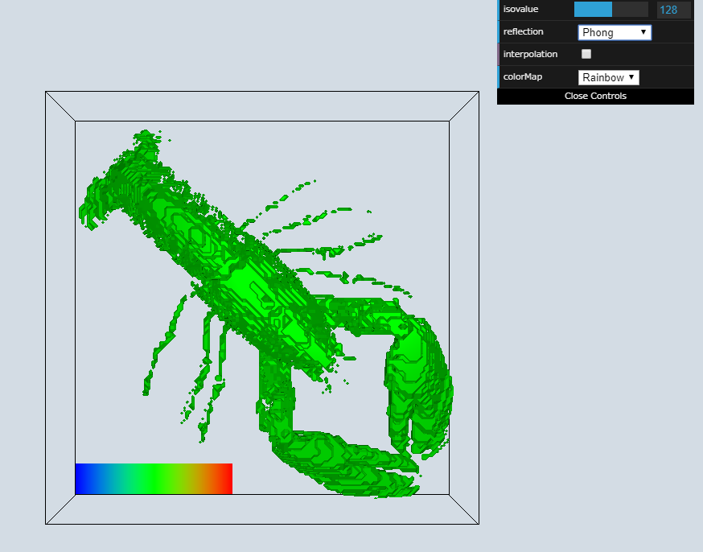
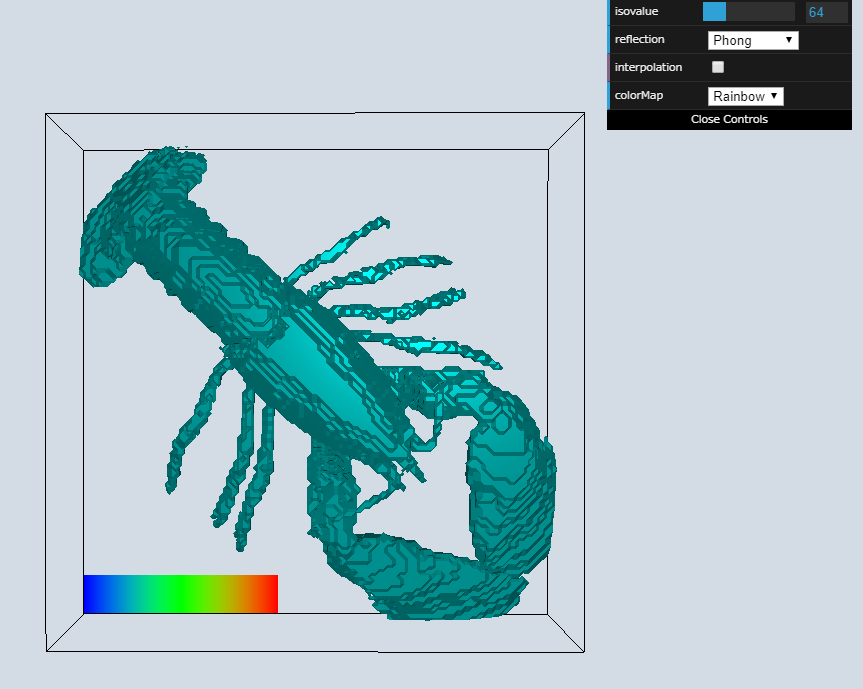
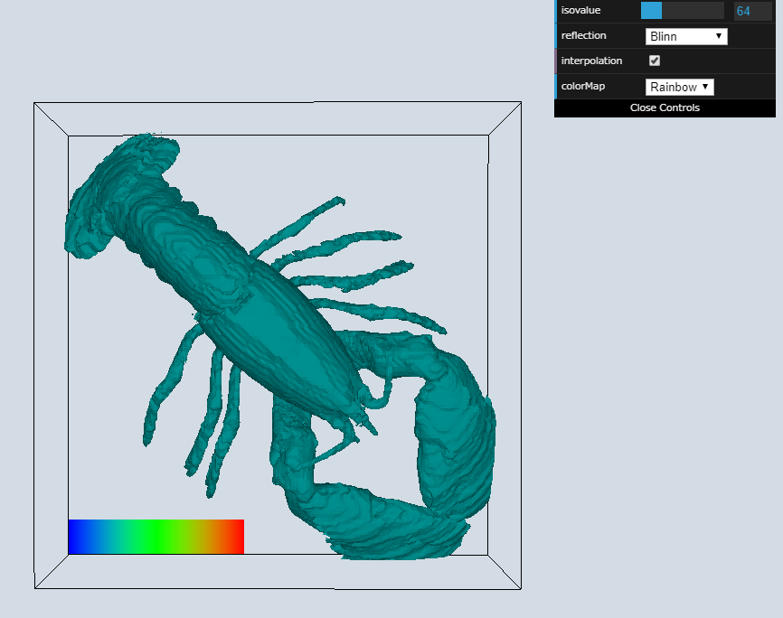

情報可視化論最終レポート
194x122x 許蔚然
Overview

最終課題(https://utuzenkyo.github.io/InfoVis2019/Final/final_task.html)
には，授業で扱っていたいくつかの情報可視化方法を機能として，ロブスターのデータセットに適用した．これらの機能はUIに通じて調整することができる．
Visualization Results
右の図は，初期画面を示している．真ん中にはオブジェクトが表示されている．オブジェクトの左下にはカラーバーが表示されている．
右上には四つのパラメータを調整できるコントールパネルが表示されている．ここにはdat.gui.min.jsを使っている．isovalueのバーをスライドすることで，
その対応するisovalueのデータが色付けられて表示される．三種類のreflectionモデルの中から1つを選ぶことで，オブジェクトに施すことができる．
interpolationをチェックすることで，滑らかなオブジェクトが表示される．カラーマップにはRainbowとWhite-RedのSingleを選ぶことができる．
以下の図には異なる場合の画面が表示されている．図1では閾値のみが調整され，閾値に対応するデータの色が変更された．図2では反射がBlinnに変更され，
補間にチェックを入れた．図3ではカラーマップがRainbowからWhite-RedのSingleに変更された．

図1. isovalueの値を64に変更

図2. 図1に基づいてreflectionをBlinnに変更し，interpolationにチェックを入れた
 図3. 図２に基づいてcolorMapをSingleに変更
図3. 図２に基づいてcolorMapをSingleに変更